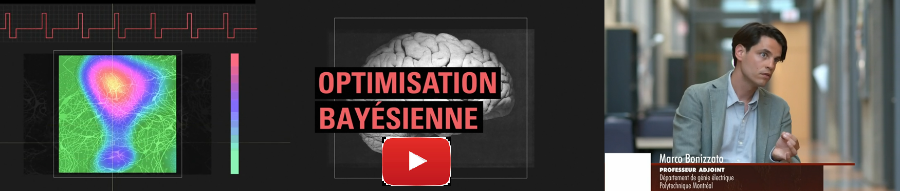

The Optimization Game
A secret two-note sequence has been generated. Your goal is to find it! Play two notes on the keyboard and the brain will score how close you are (0-10). Can you beat the GPBO algorithm?
Your sequence:
-- --Best score:
0GPBO best score:
0Iterations:
0 / 10The Tuning Problem
The brain orchestrates movement through electrical signals, rapid volleys of precisely timed impulses that travel through circuits, coordinate muscle contractions, and generate actions. An artificial neural interface can also communicate with the nervous system with carefully crafted electrical pulses.
But how do we get this communication right?
Consider a neural interface with many electrodes. Each electrode can stimulate at different intensities, different pulse widths, different frequencies, at different times, and in different spatial patterns. The number of possible combinations explodes exponentially. Finding the stimulation pattern that produces a specific desired movement - lifting a foot, opening a hand, maintaining balance - becomes a search through a space so vast that manual testing is simply impossible.
This is where mathematical optimization becomes essential. We need algorithms that can intelligently explore this high-dimensional parameter space, learning from each test to make increasingly informed guesses about where the optimal settings lie.
One of the mathematical optimization frameworks that we like to work with a lot is Bayesian optimization based on Gaussian processes (GPBO).
Learning to Search
Traditional approaches to programming neurostimulation rely on clinicians or researchers manually testing parameter combinations, adjusting settings based on observed responses, and gradually converging on something that works. This process is slow, labor-intensive, and often settles on suboptimal solutions simply because there isn't time to test alternatives.
Our laboratory develops autonomous learning algorithms that can perform this search automatically, in real-time, as the system is being used. These algorithms treat neurostimulation tuning as a sequential decision problem: at each step, decide which parameters to test next, observe the neural or behavioral response, update the understanding of how the system behaves, and use that updated knowledge to make the next choice.
To learn more about these methods and how they apply to clinical practice, have a look at our appearance on the Découverte TV program on ICI Radio-Canada (French only):
Scaling to Complexity
As neural interfaces grow more sophisticated, moving from simple single-electrode systems to distributed multi-site arrays, from static protocols to adaptive closed-loop control, the optimization challenge intensifies. We're not just searching for a single best setting anymore, but for entire sequences of stimulation patterns that unfold over time, responsive to the ongoing state of neural activity.
Our research tackles these challenges by developing novel algorithmic strategies specifically tailored to the structure and constraints of neural interfaces. We work at the intersection of machine learning, control theory, and computational neuroscience. We build mathematical tools that are also practically deployable in experimental and clinical settings.
Open-Source Tools
Science advances fastest when methods are shared. We release our computational tools as open-source software, allowing other laboratories to apply these optimization techniques to their own neural interface research.
Optimization Library and Tutorials
Our EduOptimNeurostim library provides a complete framework for autonomous neurostimulation parameter tuning. The repository includes:
- Production-ready optimization algorithms for neural interface control
- Interactive tutorials that guide researchers through implementation
- Simulation environments for testing algorithms before in vivo deployment
- Documented examples spanning cortical, spinal, and peripheral nerve interfaces
The library is designed to be accessible to neuroscientists without deep machine learning expertise while remaining flexible enough for methodological innovation.
A Consortium for Open Data
Perhaps our most ambitious contribution to open science is the NeuroMOSAICS consortium, Multi-scale Open-Source Across Interfaces Conditions & Species, a collaborative initiative to provide high-quality neurostimulation datasets to the broader scientific community. Computer scientists and mathematicians developing optimization algorithms rarely have access to real neural interface data. They work with synthetic benchmarks that can miss the complexity, noise, and biological constraints of actual neural systems.
NeuroMOSAICS breaks down this barrier. We've established a consortium that curates and openly shares neurostimulation datasets across multiple scales, from cortical recordings in non-human primates to spinal interfaces in rodents, providing the computational research community with the real biological data they need to develop better algorithms. This cross-pollination benefits both fields: computer scientists gain access to meaningful biological benchmarks, while neuroscience benefits from state-of-the-art optimization methods developed by the broader machine learning community.